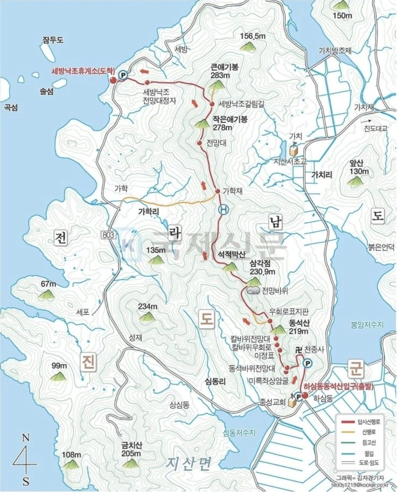
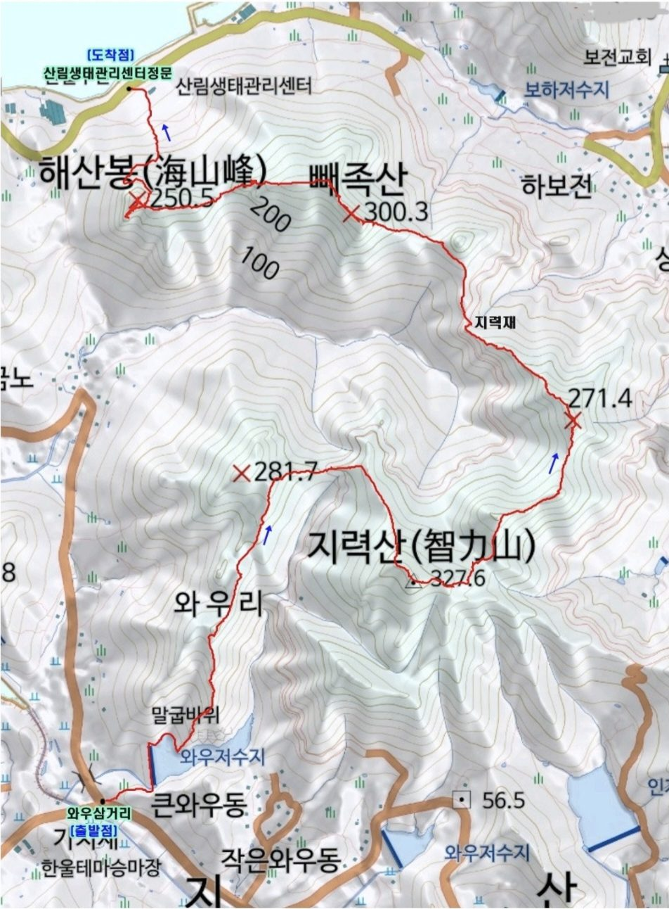
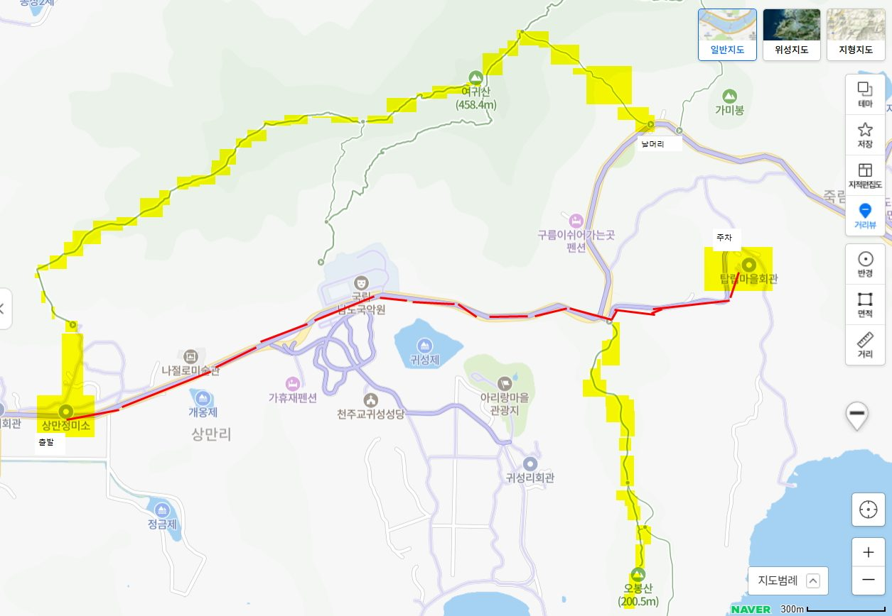
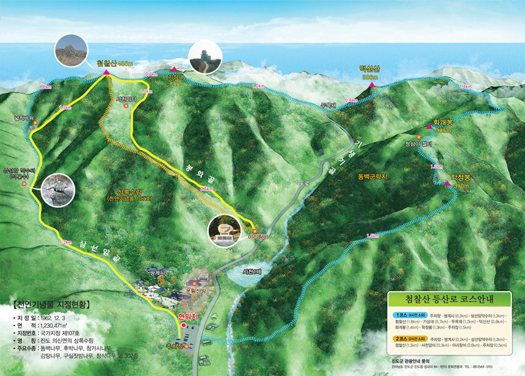
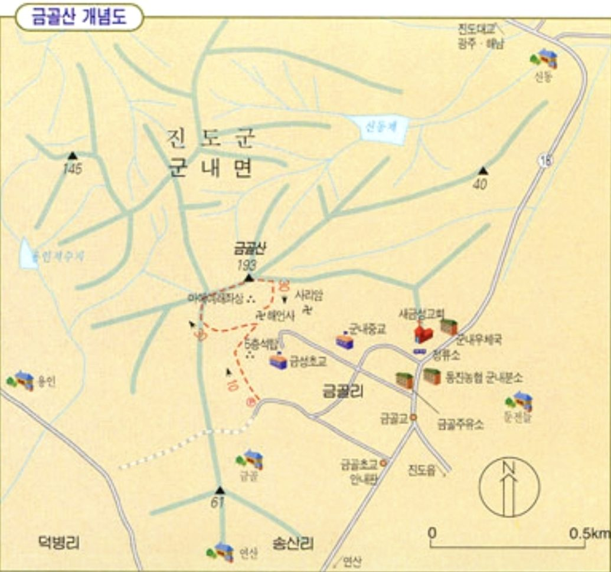
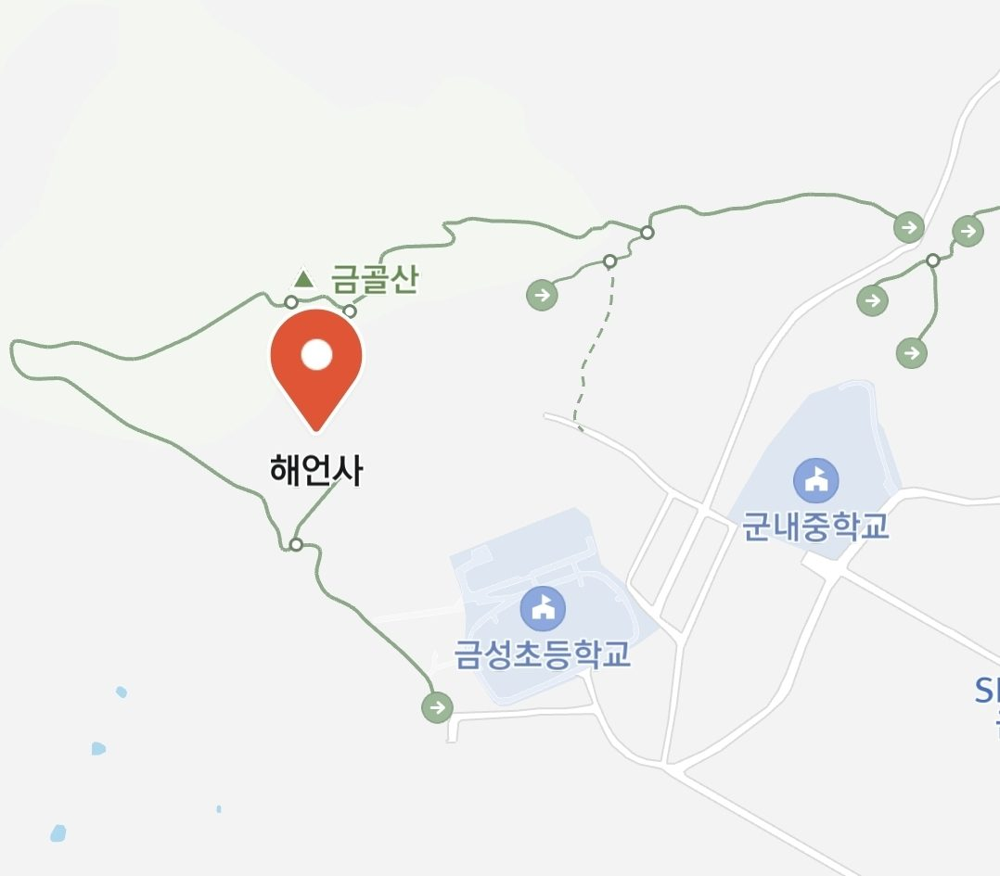
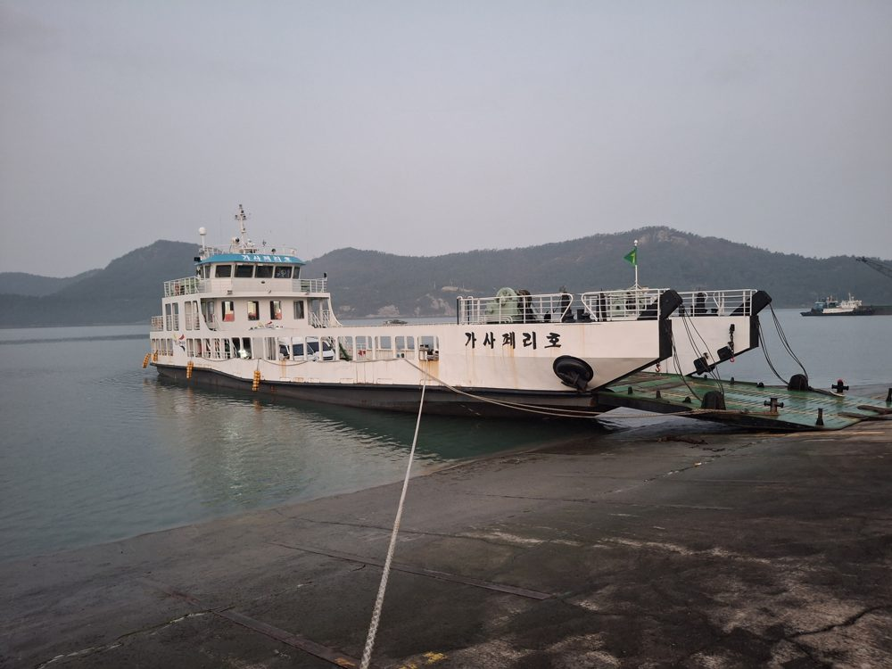

고속버스 진도 ↔ 서울 · 군내버스 읍 터미널 ↔ 산월 · 배편 쉬미 ↔ 가사도
| 읍 출발 | 세방 출발 | 경유 표기 |
|---|---|---|
| 06:20 | 06:50 | 앵무 |
| 08:30 | 09:25 | 세방 마세 봉암 |
| 10:30 | 11:15 | - |
| 13:00 | 14:00 | 마세 금노 |
| 16:00 | 16:50 | 봉암 |
| 18:20 | 숙박 | 금노 마세 |
경유 표기는 터미널 시간표판에 적힌 그대로예요.
심동 도착 시각은 시간표에 없어요. 심동은 세방에서 세 번째 정류장(가학·마세 다음)이에요.
세방 출발: 세방 → 가학 → 마세 → 심동 → 봉암 → 가치 → 금노 → 와우 → 인지 → 십일시 → 매정 → 고산 → … → 읍
읍 출발: 읍 → 조금 → 포산 → 염장 → 장구포 → 선항 → 광전 → 삼막 → 용호 → 중매 → 고산 → 매정 → … → 세방

지산면 콜택시 061-542-6787
| 읍 출발 | 하보전 탑승 | 지산 하차 |
|---|
하보전은 읍 출발 후 약 30분, 지산은 약 36분이에요.

| 읍 출발 | 헌복동 출발 | 경유 표기 |
|---|---|---|
| 06:40 | 07:20 | 읍방향-귀성 탑립 봉상 |
| 08:50 | 09:40 | 죽림방향-귀성 탑립 |
| 12:00 | 12:50 | 죽림방향-귀성 탑립 |
| 16:30 | 17:15 | 죽림방향-귀성 탑립 / 읍방향-상미 |
| 18:30 | 숙박 | - |
경유 표기는 터미널 시간표판에 적힌 그대로예요.
탑립 도착 시각은 시간표에 없어요. 헌복동에서 동헌·강계·죽림 다음 네 번째 정류장이라 헌복동 출발 뒤 곧 와요. 일찍 나가 계세요.
헌복동 출발: 헌복동 → 동헌 → 강계 → 죽림 → 탑립 → 귀성 → 상만 → 중만 → 송월 → 송정 → 구분실 → 석교 → 십일시 → … → 읍

| 읍 출발 | 사천 출발 |
|---|---|
| 07:40 | 07:50 |
| 10:30 | 10:40 |
| 13:20 | 13:30 |
| 16:30 | 16:40 |
| 17:50 | 18:00 |
검은 시간은 읍 출발, 빨간 시간은 사천(쌍계사) 출발이에요. 읍에서 사천까지 정류소 4개라 약 10분 걸려요.

| 읍 출발 | 금골 도착 | 노선 | 종점 출발 | 비고 |
|---|---|---|---|---|
| 06:05 | 06:26 | 녹진/신기 | 06:30 | |
| 06:30 | 06:51 | 녹진/우수영 | 07:00 | 우수영 장날(4·9일) |
| 08:00 | 08:21 | 녹진/신기 | 08:50 | 범바위 |
| 09:20 | 09:41 | 녹진/우수영 | 09:50 | |
| 10:40 | 11:01 | 녹진/신기 | 11:30 | 범바위 |
| 13:00 | 13:21 | 녹진/신기 | 13:50 | 범바위 |
| 15:50 | 16:11 | 녹진/신기 | 16:40 | 범바위 |
| 18:20 | 18:41 | 녹진/신기 | 숙박 |
종점 출발은 녹진·신기·우수영에서 읍으로 돌아오는 시각이에요.


진도군 농어촌버스 시간표(2025년 8월 기준)예요. 시각은 대략이고 길 사정에 따라 조금 빠르거나 늦을 수 있어요.
2026년 10월 기준 시간표예요. 명절·공휴일과 요금은 예매할 때 꼭 확인하세요.
출처: 진도→서울 진도군청 시외버스 시간표(jindo.go.kr, 2026-10-23 확인), 서울→진도 공공데이터 시간표(아사마루, 2026-10-02 수정, vocados·koreacharts와 같음).

| 항차 | 쉬미 출발 | 가사도 도착 |
|---|---|---|
| 1항차 | 07:00 | 07:55 |
| 2항차 | 11:30 | 12:25 |
| 3항차하절기(게시 시간표) | 16:00 | 16:55 |
| 3항차동절기 | 15:00 | 15:55 |
| 항차 | 가사도 출발 | 쉬미 도착 |
|---|---|---|
| 1항차 | 08:10 | 09:05 |
| 2항차 | 13:00 | 13:55 |
| 3항차하절기(게시 시간표) | 17:10 | 19:10(게시판 표기 그대로) |
| 3항차동절기 | 16:10 | 17:10 |
동절기 3항차: 쉬미 출발 15:00 → 가사도 도착 15:55 · 가사도 출발 16:10 → 쉬미 도착 17:10 (터미널 게시판 손글씨 변경 표시). 출발 전 꼭 확인하세요.
출처: 쉬미항여객선터미널 게시 시간표 (2026-10-31 촬영)